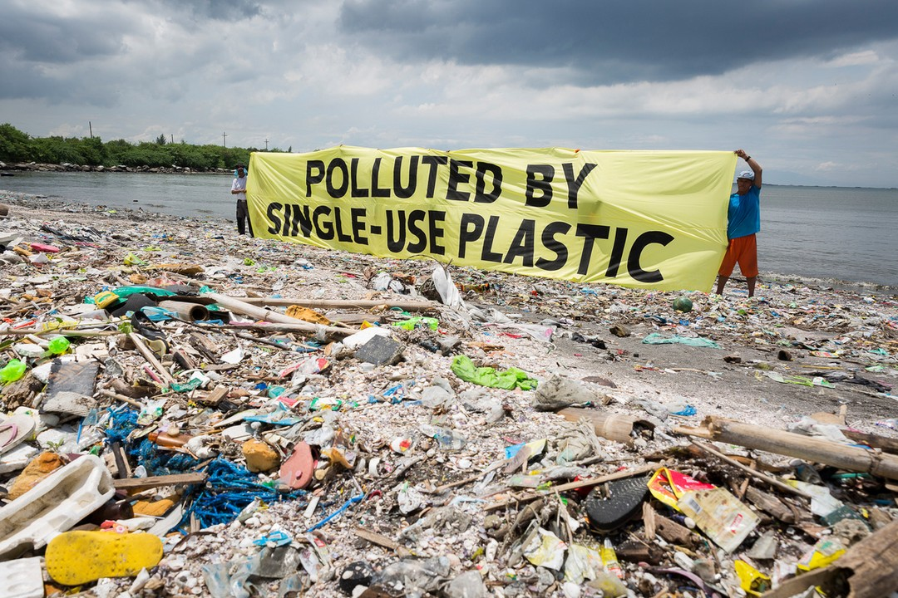

Bagi Lingkungan:
- Sampah plastik akan mengganggu jalur terserapnya air ke dalam tanah.
- Menurukan kesuburan tanah. Hal ini dikarenakan plastik juga dapat menghalangi sirkulasi udara di dalam tanah dan ruang gerak makhluk hidup bawah tanah yang berperan dalam proses penyuburan tanah.
- Kualitas air di lingkungan akan semakin memburuk karena banyaknya sampah plastik yang mengandung bahan-bahan kimia, seperti styrene trimer, bisphenol A, dan lain sebagainya, di mana pada akhirnya akan meracuni air yang biasanya dijadikan air minum atau mandi dalam kehidupan sehari-hari.
- Pembuangan sampah plastik secara sembarangan di sungai-sungai akan mengakibatkan pendangkalan sungai dan penyumbatan alirannya sehingga bukan tidak mungkin akan menyebabkan banjir ketika hujan turun.
- Ketika hewan-hewan yang menelan sampah atau kantong plastik mati, maka sampah atau kantong plastik yang berada di dalam tubuhnya tersebut tidak akan hancur dan tetap utuh sehingga akhirnya akan menjadi bangkai yang dapat meracuni hewan lainnya, manusia yang berada di sekitarnya, hingga mencemari lingkungan dengan baunya yang biasanya busuk dan menyengat.
Bagi Kesehatan:
- Sampah plastik yang dibakar, maka asapnya akan mencemari lingkungan. Yang mana, dalam asap tersebut biasanya terkandung zat dioksin yang apabila dihirup oleh manusia dapat menyebabkan berbagai gangguan kesehatan, seperti gangguan sistem pernapasan pada manusia, kanker, pembengkakan hati, dan gangguan sistem syaraf.
- Penyumbatan saluran air akibat sampah plastik dapat menjadi tempat perkembangbiakan daur hidup nyamuk dan serangga berbahaya lainnya, seperti nyamuk BDB dan malaria, sehingga menimbulkan penyakit.
- Dapat mengganggu sistem saraf, Dioksin yang terhirup oleh manusia, bukan cuma sekedar kanker yang di timbulkan. Sistem saraf pun akan terangsang sehingga menimbulkan kerusakan. Kerusakan sistem saraf ini juga akan berimbas pada kinerja organ dalam lainnya, karena pembakaran plastik yang tidak sempurna.
- Zat karsinogenik yang keluar dari pengunaaan botol atau plastic saat terkena paparan panas akan menyebabkan peradangan pada paru – paru.